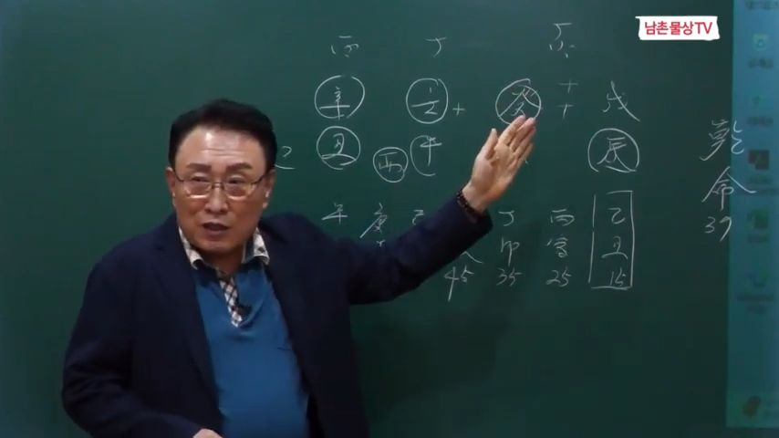

남촌물상TV 전체 문서 › 동영상 V0096
부모를 잘못 만나 인생이 망가진 사주

| 문서 번호 | V0096 (동영상) |
|---|---|
| 영상 URL | https://www.youtube.com/watch?v=I4j9vBN527g |
| 영상 ID | I4j9vBN527g |
| 게시일 | 2024-10-07 |
| 길이 | 24:23 (1463초) |
| 조회수 | 3,557회 (수집 시점 기준) |
| 카테고리 | Howto & Style |
| 자막 | ko (자동생성) |
| 수집 시각 | 2026-08-30 17:03 (KST) |
영상 설명 (YouTube 설명 원문 그대로)
부모 때문에 망가진 자식의 사주 #사주풀이 #사주팔자 #부모사주
전체 자막 (531구간 · 타임스탬프 클릭 시 해당 장면으로 이동)
[0:00]피토가 임수의 탁수가 되는 과정이기
[0:02]때문에 아버지로 인해서 자식이
[0:05]망가지는 사주다
[0:08]이렇게 오늘 이제에 우리가 벤돌이
[0:12]사주는 부모가
[0:14]아 어떤 부모를 만나에 따라서 사람이
[0:18]잘되고 안 되느냐 아 이러한 관계
[0:21]소위 탁수의 개념을 가지고 설명을
[0:23]드릴
[0:25]거예요음 제가이 사주는 어 제가
[0:28]중국의 왕 그 황조의
[0:31]상당 갔을 때 제가 했던 사주기
[0:33]때문에 여러분들이 중국인으로
[0:35]생각하시면 됩니다 자 우리들이 이제에
[0:38]사주 올 때 항시 이제 좋은 사주를
[0:41]주로 많이 설명을 드렸는데 안 좋은
[0:44]것도 여러분들이 해봐야 돼요 맨날
[0:47]좋은 거로 생각하니까 그냥 그 답을
[0:49]쓰실 때 좋은 얘기만 쓰는데 안 좋은
[0:51]것도 여러분 아셔야 돼 그래 그
[0:53]설명을 하기 위해서 오늘 탁수의
[0:54]개념의 사주를
[0:56]보겠습니다 자 그래서 저희도 이제
[0:59]보시면 어 무진 개해 임모 임저 신축
[1:04]이제이 사주를 한번 눈에 딱
[1:05]들어오시면 얼른 눈에 들어올 수가
[1:08]있어야 돼요 자 그러면 자 임호
[1:11]일주의 특성이라는 것은 항시 먼저
[1:13]얘기죠 아 애정이 강한 사람 이제
[1:16]이렇게 그 알고 있으시면 돼요 자
[1:19]그다음에
[1:20]임수하이 계수가 같이 있습니다
[1:23]그러면이 물이 많다는 얘기는 소위 그
[1:26]어어 강물이 흘러간다고 이해하시면
[1:29]된다고 그랬어요 자 큰물과 작은 물이
[1:31]합해지면 큰 강물이 되는 거예요
[1:34]그런데 저 무토는 글씨가 그어 재방
[1:39]역할을 할 수 있느냐 없느냐를
[1:41]이해하시면 된다 그 말이에요 그래서
[1:43]재방을 잘 우리가 튼튼한 재방을
[1:46]가지고
[1:47]있으면 태양이 무리에 떠 있을 때 큰
[1:51]명예와 재물을 가질 수가 있는데
[1:53]이사주 구성이 소위이 계수가 무하고
[1:59]합을 했다는 개념을 여기서 이해하시면
[2:01]돼요 그래서 천간의 합의 원리가
[2:04]얼마만큼 중요하다는 것 다시 한번
[2:07]깨달아야 합니다 그러니까이 물이
[2:10]많다는 개념에서 무이 막으면 좋다
[2:13]그랬는데이 사주는 무게 합으로써 뭐가
[2:17]됐어요 자 여기 두 가지 나온 거죠
[2:20]자 여기에서 보시면 무게 합은 기토가
[2:23]됐다 그 말이에요 자 기토가 돼
[2:25]있어요 그 자 또 여기서 화한다는
[2:29]기는 과 여자라 그랬죠 그죠 여기에서
[2:33]우리가 배웠던
[2:35]것은 천간의 합의 원리에서 상생은
[2:38]이미 여러분들 무게 화고 저희들이
[2:41]개발한 상 그걸 개발하는 것은 무계합
[2:44]기토라이 말이에요 어 그래서 상생과
[2:47]상기의 관계를 정확하게 이해하시면
[2:49]되고 그럼 여기 화가 붙인다는 얘기죠
[2:52]자 그럴 때 우리가 얼른 생각할 때
[2:54]여기에 임수의 관은 토해요 그죠 자
[2:58]근데 여기에서 나하고 똑같은 물은
[3:00]같은 물기 아버지도 될 수 있는
[3:02]거예요 그러면 쉽게 관도 내
[3:05]아버지인데 아버지하고이 계수하고 합을
[3:08]하다 보니까 작은 땅이 됐어요 그러면
[3:13]우리는 이제이 정화를이 병화가이 무게
[3:16]화를 보통 정화로 우리는 공부할 때
[3:19]배웠다 그 말이에요 자 우리가 무기
[3:21]하는 무슨 화 이렇게 했을 때
[3:23]몰랐어요 근데 우리는 이제 정화로
[3:25]이미 기초율 설명을 다 드린 바
[3:27]있습니다 그러니까이 세 가지가 여기서
[3:30]한번 이해를 한번시면 돼요 자 무게
[3:32]합의 기토가 돼서 잘 봐요 기토가
[3:36]돼서 되면 어떻게 될까요 기 그렇죠
[3:39]여기에이 임수의 탁수가 된다는 개념이
[3:42]나오죠 그러면 자기 아버지가 무게
[3:47]합을 해서 화가 생긴다는서는 새로
[3:50]보이지 않는 여자가 생기는 것이고
[3:53]거기에서 주어진 것은 내가 탁수가
[3:56]됐다고 보니까 아버지로 인해서 내가
[3:59]인생이 가지는 이런 사주를 볼 수가
[4:01]있다 이것이 이제 우리
[4:04]핵심입니다 그래서이 탁수의 개념이란
[4:07]것을 이해를 잘 아셔야 돼요 그래서
[4:09]천간 합의 원리에서 여러분들이 누차
[4:12]제가
[4:14]강조하지만 무게 화는 무슨 화
[4:17]이렇게면 우리 몰랐다 그 말이에요
[4:18]그러면 이것도 굉 여자 아이에요
[4:20]아버지 여기서 볼 때도 재물인
[4:23]여기에서 무게 관으로서 합해져서 화가
[4:27]된 것은 아버지의 여자 아버지의
[4:30]아버지 여자 자 그러니까
[4:32]소위 보이지 않는 여자가 될 수 있는
[4:35]거예요
[4:36]그다음에 우리가 개발한 무기 합의
[4:39]무기 기토는 어떤 것이었냐 그 말이
[4:42]기토는 무기 합의 기토는 어떤
[4:44]것이냐이 기토가 같은 물인데 구별하라
[4:48]그랬잖아요
[4:49]우리는 물은 하나가 합치면
[4:52]하나지만 해석할 때는 무토와 토로
[4:56]구별하라 설명을 드린 바 있어요
[4:58]그러니까 기토가 임수의 탁수가 되는
[5:01]과정이기 때문에 아버지로 인해서
[5:03]자식이 망가지는 사주다 이렇게 설명을
[5:06]할 수가 있다 자 그러면 자 봅시다
[5:10]우리가 아 여기 이제이 사람의 특성을
[5:13]보면은 보면은 자 지지는 그럼 어떤
[5:16]것이야 지지에는 지지에는 뭐가 있어요
[5:20]지지에는 축토와 진토가 같이
[5:24]있죠 그러면 해수가 뭐예요 해수가
[5:29]탁수 의 밑에 있는 해수가 수예요
[5:32]그러니까 천간 지지가 모두 다 탁수가
[5:34]된 사주
[5:36]이해하셨죠네 그러니까 이제 이것을
[5:39]핵심으로 이해를 못 하시면 정확한
[5:42]답을 얻을 수가 없어요 그래
[5:43]여러분들이 글을 써 우셔야 돼 쓰다
[5:46]보면 아 무기압 기토가이 임수의
[5:49]탁수가 됐네 써 보면은 새로운 것을
[5:51]여러분들이 얻을 수가 있어요 안 쓰다
[5:54]보면 그냥 무게 하야 기토이 생각만
[5:56]가지고 하면 여러분들이 정확하게 답을
[5:59]내기 어려워요 그래서 자꾸 써 틀리든
[6:02]맞든 본인이 해석을 해보라는 이유를
[6:05]그래서 밴드 올린 사주를 자꾸 여러분
[6:07]써서 올려봐라 하는 얘기입니다 우리
[6:10]이제 어떤이이 사주가 이렇게 망가졌어
[6:13]그러면 안 망가지는 방법은 또 뭐냐
[6:15]그 말이에요 어떤 형태를 제하면이
[6:18]사람이 망가지지 않고 살 수가 있느냐
[6:22]이것이 우리가 할 수 있는 일이고
[6:23]우리가 할 수 있는 답을 줘야 되는
[6:25]사람이요 고전에가 상담한 사람 너
[6:27]이렇게 말수 안 좋으니까 넌 안 좋은
[6:29]사주야지 그 너 고생하게 살게 돼
[6:31]있어 이렇게 답을
[6:34]정해졌다면 우리 물상론에서는 어떤
[6:36]결과 있냐하면 너가 안 좋은데 어떻게
[6:40]네가 잘되게 할 수 있는 방법을
[6:41]제시해 주는 학문이라 그 말이에요
[6:43]그래서 운명이라는
[6:45]것은 자주가 운명 운명한 것도 타고난
[6:49]것은 명이고 운의 흐름을 따라온 것은
[6:53]이게 운이에요 그래서 두 글자가
[6:56]합해서 운명이라고 하는 겁니다 그래서
[6:59]사주 원국이 아무리
[7:01]좋아도 운이 좋지 않으면 힘들게
[7:04]살아가게 돼 있어요 그러면 그 운을
[7:07]어떻게해서 바꿔주고 어떻게 잘살 수
[7:09]있는 방법을 지금이 사람한테 상담하는
[7:12]방법을 한번 해보자 그 말입니다 자
[7:14]여기서 잘
[7:16]보세요 무기 파를이 사람이 만약에
[7:20]어떤 행위를 해서 재를 쓰느냐 안
[7:23]쓰냐예요 그럼 여기에 무기 파가
[7:25]뭐라고 정하라고 그랬죠 자 정화다
[7:29]그러면 아버지가이 사람의 정화를
[7:32]여자로 쓰지 않하면 정림 한 목이 될
[7:35]수 있는 거예요 자 잘 보세요 그럼
[7:38]여기에서이 정화와 임수가 정립 한
[7:41]목이 된다고 그랬잖아요 정립한 무슨
[7:43]목이라고 했어요 을목이 우리 물상
[7:46]놈만 하는 거예 자 을목이 그러면
[7:50]아버지가 무게 합 기토 만들어 주면이
[7:54]을목이 심어질 수 있다는 얘기예요
[7:56]이럴 때 가정이 정상적으로 될 수
[7:58]있는 가정이 돼 그래서 이 사주
[8:00]특성은 우리가 성할 때 아버지가 어떤
[8:04]행위를 하느냐에 따라서 문제가 되고
[8:07]안되고 한다 이게 핵심이에요
[8:10]그러니까 이것을 알지 못하면이 사주는
[8:14]풀기가 굉장히
[8:16]어려워요 그래서 청관 기초 이론에서
[8:19]제가 시하는 얘 기초를 달달달 해도
[8:22]내가 내 생각이 접목을 할 수 있는
[8:25]것까지를 생각하라고 제가 하는
[8:27]얘기가 모든은에서
[8:30]말에요 그래 기초를 수십번 자꾸
[8:32]반복해서 여러분들이 기초에 대한
[8:35]사상을 한번 잘 엮어보고 이해했을 때
[8:39]자기 생각을 반영시킬 수 있는 길이
[8:41]돼야 한다 이게 우리 무 대세란
[8:45]말이에요 이걸 꼭 하셔야 돼요 그래서
[8:47]제가 기초 기초 노래 부른 것도
[8:49]그래서 기초기초 노래 부른 겁니다 자
[8:51]그러면 답이 나왔죠 자 어떻게이
[8:54]사람이 망가지 사주가 어떤 행위를
[8:58]아버지가 어떻게 했으면 여기에 자식은
[9:02]잘될 수 있다라고 우리 정의를 내릴
[9:04]수가 있는 거예요 확실하죠 자
[9:08]그러면 여기에서 그러면 여기 인성이
[9:11]어머니요 어머니는 뭐 한 사람이냐
[9:14]어머니 뭐한 사람이니까 자 쭉 보세요
[9:17]여기서 보시면이 사람은 다 재를 끌고
[9:19]사주에 볼까요 자
[9:23]봐보세요 천간에 무게 하죠 물이죠
[9:26]내가 뭘 끌고 여기 정화를 고죠 죠
[9:30]여기는 목기 화죠 이것도 종이에요 그
[9:34]모든 글씨가 다 돈은 만들 수 있는
[9:37]글씨에요 그러니까 돈을 만들어서
[9:40]아버지로 인해서 탁수가 돼서 본인는
[9:43]망가지지만이 어머니는 뭐예요
[9:45]하보라야지 아니에요 그럼 엄마가
[9:49]재물을 끌어다가이 택이 물에 임수
[9:53]계수 물에 탁수 물에 태양이 떴다
[9:55]과정을 해보자 그러면 엄마가 돈
[9:57]벌어봐야 탁수 물에 빛 아니에요
[10:00]그러니까 엄마는 아무리 돈을 벌어도
[10:03]거기에 미치는 영향이 헛고 생활하고
[10:05]있다 이렇게 해석을 할 줄 알아야 돼
[10:07]이게 우리 물상 론의 답이에요 그래서
[10:11]응용을 본인들이 할 수 있어야 돼 저
[10:13]엄마가 돈을 벌어 왔는데 여기이
[10:16]계수에 기토의 탁수가 돼 있는 물에
[10:20]어머니 태양이 뜬 들 돈인데 그 돈이
[10:23]영양 발이가 되겠냐 이렇게 이해하시면
[10:25]되지 않아요 그럼 충분하 여러분 무슨
[10:28]생각할 수 있어요 아 아 엄마가 돈을
[10:30]벌었는데이 자식들 치다 그래 맨날
[10:32]고생만 한다는 얘기 답이 나와 나와
[10:36]나오잖아요 이렇게 정확하게 답을
[10:38]설명할 수가 있어야 돼 이것이 우리
[10:42]물상의
[10:43]핵심적이고 다른데 문하고 틀린
[10:46]점이에요 그 구별을 해서 그 고전처럼
[10:49]뭐 재운이 안 좋으니까 뭐 고전에서는
[10:54]무게 화가
[10:55]정인지 예를 들어서 무
[10:58]기인지 쟤는 몰라요 그렇게 해서
[11:01]여러분들이 고정을 배웠어요 그러니까
[11:04]이런 사주를 풀러 두면 고정 사주
[11:06]맞지 않는 거예요 그냥 탁수의 개념은
[11:09]얘기할 수 있는데 어떻게 탁수가 되고
[11:13]어떻게함으로써이 사주가 제대로
[11:16]편안하게 갈 수 있는 길이 뭔가를
[11:18]제시할 수 있는 것이 못 돼요 고전
[11:20]잘하시 분 해보세요이 포르 본가 안
[11:23]돼요 못 합니다 자
[11:25]그러면 행동은 어떤 것이었을까 행동은
[11:28]천가은 우리가 목표죠 지지의 행동이라
[11:30]그 말이에요 그러면 항시 봤을 때
[11:33]어떤 개념이 냐면 지지의 축토와
[11:36]진토가 탁수는 개념 있잖아요 탁수
[11:39]어떻게 안 되게 하느냐 이게
[11:41]핵심이에요
[11:43]그러면
[11:46]핵수저 진유합금 사유축 합금을 하게
[11:49]되면 되죠 그럼 유금을 쓴다고 가장을
[11:51]해 보면 잘
[11:53]봐요 유금을 쓴다고 가정을 해 보면
[11:57]유축에 4가 붙었죠 자 그러면 엄마가
[12:01]엄마의 뿌리가 유금이 되는 거예요
[12:04]그러면이 사 유축이 된다는 얘기는
[12:07]병화를 끌어다 쓸 수 있다는 얘기도
[12:08]돼요 우리가 자 인술이 될 수가 있고
[12:13]또 사미가 됐을 때 병화가 밝아진다고
[12:16]이야기했는데 사축을 해도 신금 있을
[12:19]때 사축을 해도 병화는 끌어을 수
[12:22]있는거다 여기 또 다시 한번 제가
[12:24]새로운 걸 제가 제시한 거예요
[12:27]자 그러니까 유축을 하게 되면 병화에
[12:31]돈을 벌 수 있다 자 그러면 유금고
[12:35]진유 합금이 탁수가 안 되죠
[12:37]어머니하고 같이 돈을 벌게 되면
[12:40]이것은 탁수가 되지 않아 하는 학문이
[12:43]금방 눈에 두셔야 한다 그
[12:45]말이에요 그럼이 사람은 누구하고 같이
[12:47]일을 해야 돼 엄마 엄마하고 일하고
[12:50]자 그러면 자 꼭 엄마하고만 일할
[12:52]것이냐 아이프 하는 경우는 어느 때
[12:55]어느 때 사미가 될 때 여기에 사화와
[13:00]해면이 미가 될 거 아니에요 미가 될
[13:02]거 아니에요 자 종립 한 목이 됐으면
[13:05]해명이 될 수 있는 거예요 그러니까
[13:07]여기에 4 5 미가 될 수 있는 길이
[13:09]있어요 없어요 있죠 그러면 여기
[13:12]부인과 여자를 저 같이 대동해서
[13:14]엄마와이 학문을 우리가 이해한다면
[13:18]같이 돈을 한 번에 영업을 하나
[13:21]사업을 한다면 잘된 사주가 돼 안 돼
[13:23]된다 이렇게 답을 정리를 그러니까
[13:27]우리들이 상담을 할 때
[13:30]어떻게 하면이 사람이 잘되게 만들어
[13:31]주는게 우리가 할 일이라 그 말이에요
[13:33]무조건 안 되니까 뭐 구을 써라
[13:36]구다라 한 거 아니야 이거는 그런 그
[13:39]학문 갖고는 된 우리 물상의 특징이
[13:41]뭐예요 잘못된 사람을 어떻게 잘되고
[13:44]네가 할 수 있는 길을 열어 주는게
[13:46]우리가 학문이고 우리 할 일이라
[13:47]그랬어요 자 이것을 할 줄 알아야만
[13:51]여러분들이 상담의 기법이 충분히
[13:53]늘어나고 또 상당히 보람을 느낄 수
[13:56]있다 그렇게 되면이 사람 경우는 보다
[14:00]사미 개념과 차축의 개념으로 가게
[14:03]되면이 사람은 돈이 돼 안돼 되잖아요
[14:07]자 이렇게 원국 해석이 다 끝난
[14:09]거예요 그래서 우리는 이러한 원국
[14:12]해석을 정하이 끝내 놓고 그리고 운을
[14:16]보셔서 해주시면 돼요 이게 상담의
[14:19]기법이에요
[14:20]그러니까이 사람의 방법은 아까 탁수의
[14:24]개념에서 부모가 하나 아버지
[14:27]하나의으로 인해서 식 망가졌다 그거는
[14:31]이미 우리가 원국에서 이해했는데
[14:34]이것을 안 하게 할 수 있는 탁수가
[14:36]안 될 수 있는 방법 아버지가 아무리
[14:38]수를 만들었어도 헤어 나가는 그 길이
[14:41]있어야 될 거 아니겠어요 그러니까
[14:43]본인이 아버지가 망가지고 나 영혼이
[14:45]망가져서 나 돈이 사람이 안 돼
[14:48]이렇게 할할게 아니라 어떻게 네가
[14:52]처신하고 너의 정강 가정생활과 네가
[14:56]실질적인 어머니와 같이 사업을 했을
[14:59]경우에 예이 사람은 잘 아버지 없이도
[15:02]잘 사 수 있다라고 하는 것을 정의를
[15:05]내려 주셔야 한다 그 말이야 이게
[15:07]우리의 새로 학문이고 우리 한 우리가
[15:09]할 일이에요 그래서 이러한 사주도
[15:14]절대 불안하거나 뭔가 안 잘 모르겠다
[15:18]하지 마시고 배우는 원칙을 그대로
[15:20]탁수의 개념을 제가 항식 했죠 어떻게
[15:23]하면 탁수가 안 돼 자 이렇게 되면
[15:25]탁수가 된 사주는 건강에도 문제가
[15:28]있죠 그죠 자 그러면 관이 탁수가 될
[15:31]때 첫째 조건 뭐예요 법적인 문제
[15:34]법적인 문제 야기 된다
[15:36]이거예요 관이 탁여이 관이 남자가
[15:40]관이 탁수 된 것은 법적인 문제가
[15:41]1번이고 여자 사주라 하면 관이
[15:44]탁수가 뭐예요 남자의 문제다이 말이지
[15:46]이렇게 구별해서 여러분들이 이해하시면
[15:50]충분하게 어떤 어려운 사주가 오더라도
[15:53]쉽게쉽게 상담을 할 수가 있게 된다
[15:55]그 말이에요 충분히 이해하셨죠 자
[16:00]자 그러면 이제 대운으로 한번
[16:02]가볼까요 대운으로 여러분 이제
[16:04]대운으로 한번 설명을 해
[16:06]봐요 그러면 이런 사람들의 사주가
[16:09]이제 여기 축이란 말이에요 을축
[16:11]자에요 자 을축 운이에요 자 을축
[16:15]대운 그럼 어떤 역할을 할까 생각해
[16:17]보세요 그러면 목이라는 글씨가 글씨가
[16:22]아까
[16:22]얘기했죠 무 토에서 여기에서 심어져야
[16:28]되는데이 으로 가게 되면은 변해 안
[16:31]변해요 그럼 자가 지할 수 있는 일은
[16:35]이미 아버지가 기토를 만들어 주면이
[16:38]운에 너는 거기에 심어져서이 간증을
[16:41]지킬 수 있어라고 하는 것이 대조한다
[16:43]그 말이야 그죠
[16:45]근데 이미 아버지가 무게 하서 여자로
[16:49]다 써 먹었어 그럼 이제 기토는
[16:51]있어도지가 뭔가를 해러 갈거다 그
[16:53]말이에요 그러면이 기토의 무기 기토의
[16:57]자 잘 봐 기 기토의 을목이 심어졌다
[17:01]가정이 그니까 이거는이이 사람 운이죠
[17:05]아까 이건 원국 해석할 때는 다
[17:07]다르지만이 사람은 운이에요 그러면
[17:10]무계합 기토의 기토가 어차 무계합
[17:12]기토는
[17:13]기토 그러면 탁수가 안 되기 위해서
[17:16]을목이 심어졌다는 얘기는 자 우리가
[17:18]땅에 나무를 심은다면 뭐라 그랬어
[17:21]그렇지 가정을 꾸물 수 있다고
[17:23]결혼하는 시기가 된다 그랬어요
[17:25]특히이 임수의
[17:28]재방을 피어서 막어 있다로 가장을 해
[17:31]보면은 을목이
[17:34]심어져서 작은 섬으로서 존재할 수
[17:36]있다고 이해하셨죠 그런데 그런데 그
[17:40]얘기는 얘가 일치 감지 가정을
[17:42]가지라고 얘기해주 24기 전에 네가
[17:44]그런 일이 있을 것이라고 예측해 준
[17:46]거예요 그러면이 축토는 뭐냐 축토는
[17:50]진술축미 탁수가 되잖아요여 탁수 축토
[17:53]진도 다 탁수 탁수인 사유 축의
[17:56]유금이 될 거죠 그러면 여기이 자식
[18:00]자리하고 또 축토가 연결 있어요
[18:02]없어요 있잖아요 그러면 여기에 사유
[18:04]축에 유금이 된다는 얘기는 자식
[18:07]자리에 뭐가 하나 생긴
[18:09]거지 뭐가
[18:11]생겼을까요 자식이 생겼을 거 아니에요
[18:14]도위도 그럼 어느 때 생겼는가 보면
[18:17]되지 자 봅시다 여기 대원 봐봐요
[18:19]저기 이제 한번 그 저 보시면
[18:21]짚어봅시다 여기
[18:23]봅시다 이미이 여기서 예측해 준 거
[18:26]찾아요 당시 여러분들이 그 세운을 볼
[18:28]때는 대운에서 얘기해 주 걸 먼저
[18:31]찾아요 그럼 자 여기서 이미 을이란게
[18:34]나와 있어요 어디에서 을이 온가
[18:36]보시면 여기
[18:37]오잖아요 18살 때 그럼 자 을리
[18:41]아까 기토
[18:43]심어졌고 왔죠 사유 했어 안 했어
[18:46]이때 임신이 되는 거야 18세 때
[18:50]18세 때이 사람이 임신 한 거예요
[18:53]그면 그러면 아들을 낳냐 딸을 낳냐
[18:56]이걸 찾아내야지 우리는 자 그러면
[18:59]여기에 친구의 뿌리가 유이지 엄마가
[19:02]여자지 이거 유이지 딸이지 이렇게
[19:06]보라 그 말이에요 그럼이 사람이 뭘
[19:08]나갔어 잘랐지
[19:11]이렇게 정확하게 딱딱 맞아떨어집니다
[19:14]그래서 제가 중국해 상담했을 때
[19:16]이분이 제가 나한테 손을 들었어요
[19:19]어떻 한국 사람들이 와서 중국 사람
[19:22]사주 이렇게 잘 보냐 아 그렇게해서
[19:24]제가 그 얘기가 있었는데 한가지
[19:28]문제은 화에서이이 저 아버지가 아
[19:32]그어 첩을 두고 있다는 얘기를
[19:34]했는데 아이 분명히이 아버지가 여자가
[19:38]있다 진짜요 있다 찾아봐 그랬단
[19:41]말이에요 근데 그 다음날 며느리가
[19:44]아버지가 떨어졌 사 아버 며느리가
[19:46]시아버지를 조사에서 잡았어 그래서
[19:49]제가 유명해진게 뭐였 두냐
[19:53]중국에서 뒤에서 작은 마누라를 얻는
[19:57]이런 사람들 아주 맞추는데 소문나게
[20:00]잘한다고 소문이 났어요 또 어 그래서
[20:03]이제 바람피는 사람들이 전부 다 또
[20:06]아줌마들이 또 집결하게 돼 있어
[20:08]그래서 제가 유명세를 탄 때가
[20:10]있었습니다 작년에 근데 이제 이렇게
[20:13]해서 그 며느리가 진짜가
[20:15]잡았어요 그래서 찾아냈다고 이제
[20:18]난리가 났지 그래 그래서 이제
[20:20]고맙다고 저한테 연락이 왔고 해서
[20:23]이제이 사주를 다시 한번 풀어본 건데
[20:25]어쨌든 사주 내용이 그렇습니다 아
[20:28]그러니까 여러분들이 이제에 그 드러낼
[20:31]수 없는 여자의 관계 또 쉽게해서
[20:34]자식이 임신했을 때 딸이냐 아들이냐
[20:37]어떤 관계에서
[20:39]이루어졌겠지 여러분한테 설명을 드린
[20:41]거예요 근데 또 헛된 짓을 하지 헛된
[20:45]짓을 하면 또 탁수의 개념이 생긴
[20:47]거예요 그래서 얘가 이제이 진토 축도
[20:50]이런 거 생길 때 우리 이런 것을
[20:52]뭐다는 이제 반골 기지라 아버지에
[20:55]의해서 반항적인 나온 걸 소위 반골
[20:58]기지라 그래 그러니까이 얘가 탈선한
[21:01]이유가 그런 것 때문이거든요 그럼 자
[21:02]얘가 학교 난 다니고 바깥으로 돌면
[21:06]나쁜 애들 올릴 거 아니겠어요
[21:08]그러니까 학교는 안 가고 다른 들하고
[21:11]사고라 치고 기면서 여자들하고 놀로
[21:13]다기지 그러면 생긴게 자식이 생긴
[21:15]거예요 그럼 그 자식이 생길 탁수 생
[21:18]오지 했겠어요 그러면 이제 누가 누가
[21:21]길를 겠냐 누가 길를 겠어요 엄마
[21:24]여기 그래서이 엄마한테 참 고생 많이
[21:28]하시고 눈물이 저를 흐르게 만들어
[21:30]내가 이때 눈물 흘 만드는 거예요
[21:33]그래서 사주 보실 때 울게 만들려면
[21:36]울게 만들 수 있고 우게 웃게 만들
[21:37]수 있는 거예요 그래서이 사람이 그때
[21:40]이제 어렸을 때도 어디를 같겠어요
[21:43]잘못하면 깜 자 깜방 우리도 옛날에
[21:46]형무소로 아직 중국은 무서고 용어를
[21:50]씁니다 그래서 제가 거기에 여러분 그
[21:52]쓸 때 무서고 했어요 우리 한국은
[21:54]뭐예요 교도소 교서 새운 서 교정직
[22:01]그래서 우리가 교도관을 뭐라 그래요
[22:03]교정직 공무원 아 그러고 이제 우리는
[22:07]교화 식서 새로운 사람 길을 열어
[22:08]준다 해서 교도소 이렇게 만들었단
[22:11]말이에요 중은 아직도 옛날처럼
[22:13]형무소로 합니다 그래서 전단 그 우리
[22:16]판에 보면 제가 형무 용을 썼어요
[22:19]그래서 쓴 겁니다 중국이기 때문에음
[22:21]그건 이해하시면 되고 그렇게 그래서
[22:23]이제 이런 과정을 거 그 사람이 깜도
[22:25]왔다갔다 하고 관계 된 거지 자
[22:27]그러면 지금 어 대운 와 있어요
[22:29]정묘대운 정묘대운 여기 봐봐요 자
[22:32]정묘대운
[22:34]이게 문제이 자 우리가 항 시이
[22:37]있잖아요 내가 정림 합으로
[22:39]묶였어 자 깜방 가은 묶여 안 묶여
[22:43]묶이지지지 자우 유유가 딱
[22:45]떨어지잖아요 이럴 때 이제 문제가
[22:47]되는 거예요 그러면 우리가 이제 아까
[22:50]안 가게 했다고 생각면 어떻게해 아까
[22:52]정님 한 목이 기토 해서 나무 가정을
[22:55]지켰으면 지켰으면 그 저 그래도
[22:58]올바른 수
[22:59]근데 가정을 안 지키고 바깥으로
[23:02]돌면서 헛된 질 하기 때문에이 사람은
[23:05]깜방 날 수밖에 없다 이렇게 이해
[23:07]그래서 형수 가고 있습니다 그래서
[23:08]올해 갑진년 그 써나 제가 갑진년
[23:11]정묘인가 길 거예요 그때 소위
[23:15]깜빵으로 교도소로 소위 형무소로
[23:18]갔어요 그 이제 그것이 잡기 가다가
[23:22]그 도박에 도박장을 운영하다가
[23:25]결과적으로 그 어어 형무소로 가게 돼
[23:29]있었다 그래 변호사 안 됐어요 작년에
[23:31]제가 물어볼 때 뭐냐 교을 가겠냐
[23:34]깜방 가겠냐 안 가겠냐 이걸 물어본
[23:36]거예요 그래서 제가 볼 때는
[23:37]어렵겠다고 얘기했었습니다 근데 기분
[23:40]맞춰서 그렇습니다 할 수 없잖아요 그
[23:42]여러분들이 이제 상담하실 때 어떻냐면
[23:44]안좋다는 것은 분명히 어 어렵다라고
[23:47]표현을 해 줘야지 어떻게 하면 잘될
[23:49]수 있어요 또 또 물어볼 사람이
[23:50]있지않아요 근데 이런 경우는 잘 될
[23:52]수가 없어요 가정을 제가 지켜서
[23:55]했으면 돼 근데
[23:57]그만큼이을 어렵고 그리고 탁수의
[24:00]개념으로 있다면이 사람은 헤어나기
[24:03]어려워서 어렵다라고 표현 했었습니다
[24:05]자 이런 사주를 여러분들이 지금 보실
[24:07]때에 전체적인 흐름을 설명을 드렸는데
[24:10]앞으로도 여러분은이 사주를 가지고
[24:13]어떻게 탁수의 개념으로서 살아는
[24:15]가장이 어떻게 운영이 될 거고 어떤
[24:18]방법으로 잘 살할 수 있는 방법을
[24:20]강의를 해줬습니다 다음 강의도 더
[24:21]재밌는 강의하겠습니다 수고했습니다
칠판 원국 판독 (영상 프레임을 AI가 시각 판독 · 원판 대조 필수)
乾造
천간
辛
천간
壬
천간
癸
천간
戊
지지
丑
지지
午
지지
亥
지지
辰
판독 신뢰도: 중간
판독 노트: 乾命 37세, 대운 乙丑15→己巳55 순행, 丙·丁 표기와 丑·午·辰 원 주석. 일간 壬/癸 유사하나 시주·대운으로 壬 판정 · 시점 16:41 · 해당 장면 보기↗
자막은 YouTube에서 제공하는 한국어 자동음성인식(ASR) 트랙의 원문입니다. 고유명사·한자 용어·숫자 표기에 자동인식 특유의 오류가 있을 수 있어, 원문을 가능한 한 그대로 보존했습니다. 위에 칠판 원국 판독 섹션이 있는 영상은 화면 프레임을 AI가 시각 판독한 것으로 신뢰도 표기를 확인하고, 없는 영상은 화면 도표가 문서에 포함되지 않습니다.